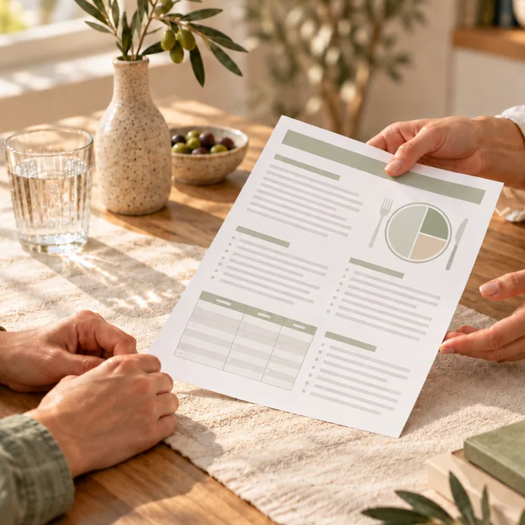

Εξατομικευμένο διαιτολόγιο
Για όσους θέλουν σαφή καθοδήγηση για το τι θα τρώνε μέσα στη μέρα.
- Πρόγραμμα διατροφής γραμμένο για εσάς, με ελληνικά φαγητά.
- Φτιάχνεται με βάση τις εξετάσεις σας, την αγωγή που παίρνετε, το ωράριό σας και τα φαγητά που σας αρέσουν.
- Σε κάθε επόμενη συνάντηση βλέπουμε τι πήγε καλά και τι θέλει αλλαγή.
- Δια ζώσης, η πρόοδος φαίνεται και στη σύσταση σώματος.